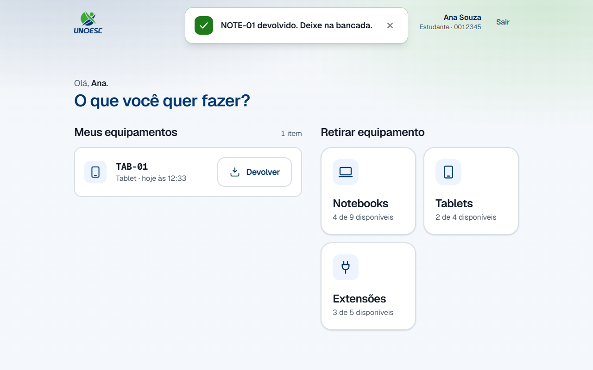

2. Devolução de equipamento
1. Objetivo do processo
Este processo devolve à secretaria um equipamento que estava emprestado. Quem está com o aparelho o deixa na bancada e declara a entrega no tablet, pela mesma matrícula com que retirou.
Quando termina, o item sai da lista de quem o levou e entra na fila de conferência da secretaria. O aparelho ainda não volta para a prateleira: quem fecha o ciclo é a baixa física, no painel.
2. Pré-condições
- O tablet da bancada está ligado, com o portal aberto.
- Você está com pelo menos um equipamento registrado no seu nome.
- O aparelho está fisicamente na bancada, ou vai estar antes de você confirmar. Esta é a pré-condição que o processo inteiro existe para garantir — ver a regra abaixo.
- A matrícula está cadastrada. O cadastro pode estar ativo ou inativo: a devolução é liberada nos dois casos.
3. Glossário do processo
Os termos que atravessam vários processos moram no glossário geral: matrícula, etiqueta, empréstimo, baixa física, tempo de prateleira e cadastro inativo.
Estes três são só desta página — são as partes da tela que os passos citam pelo nome:
| Termo | O que é |
|---|---|
| Meus equipamentos | A seção da tela inicial que lista o que está no seu nome agora, uma linha por aparelho. |
| Declarar a devolução | O que o toque em Confirmar devolução faz: avisar que o aparelho ficou na bancada. Não é a conferência. |
| Devolver tudo | O atalho acima da lista, que manda todos os itens de uma vez. Só aparece a partir de dois. |
4. Papéis e responsabilidades
| Papel | Faz | Não faz |
|---|---|---|
| Estudante ou professor | Deixa o aparelho na bancada e declara a devolução no tablet, item a item ou tudo de uma vez. | Não dá baixa. Declarar não é o mesmo que a secretaria conferir. |
| Portal (o tablet) | Lista os empréstimos abertos da matrícula, registra a declaração e grava o horário dela. | Não devolve o aparelho ao inventário. O equipamento continua emprestado até a conferência física. |
| Secretaria | Recolhe o que está na bancada e confirma o recebimento no painel — é o processo 3. | Não participa da devolução no tablet. Não precisa estar presente para você declarar. |
5. Diagrama BPMN
{kind=link}
Clique no diagrama para abri-lo em tamanho cheio — na largura da página ele entra a pouco mais de um terço do tamanho, e os rótulos não se leem.
Repare em como o diagrama termina: o último evento não é "equipamento disponível", é "o equipamento segue emprestado e espera a secretaria". A seta que sai dele é a mensagem que o processo 3 consome.
Baixar o arquivo .bpmn — a fonte do
diagrama, que abre no bpmn.io sem instalar nada.
6. Passo a passo
A tela volta sozinha ao início
Depois de dois minutos sem nenhum toque, o portal encerra o atendimento e volta à tela da matrícula. Se isso acontecer antes de você confirmar, comece de novo pelo passo 1 — nada foi registrado. Uma devolução já confirmada não se desfaz por causa disso.
-
Digite a sua matrícula no teclado da tela.
Digite todos os dígitos, inclusive os zeros da frente:
0012345e12345são matrículas diferentes. -
Toque em Continuar.
-
Confira a seção Meus equipamentos, à esquerda.
Cada linha traz a etiqueta do aparelho, a categoria e desde quando ele está com você. A etiqueta é a mesma que está colada no equipamento, caractere por caractere — é por ela que você confere qual é qual.
Só aparecem aqui os aparelhos que ainda estão no seu nome. O que você já devolveu some da lista, mesmo que a secretaria ainda não o tenha recolhido.
-
Deixe na bancada o aparelho que você veio devolver.
Este passo vem antes da confirmação de propósito, e não por formalidade: o sistema não tem como saber se o aparelho ficou ali. O que você confirma na tela seguinte é que este passo já aconteceu.
-
Você vai devolver um item ou todos de uma vez?
- Se for UM item → toque em Devolver, na linha daquele aparelho. Siga para o passo 6.
- Se forem TODOS → toque em Devolver tudo, acima da lista. O botão traz o número de itens entre parênteses e só existe a partir de dois. Siga para o passo 6.
-
Confira a etiqueta que aparece no alto do aviso contra a do aparelho que você deixou na bancada.
O aviso diz, com estas palavras:
Atenção: Deixe o equipamento na bancada. Confirma a devolução?
E, logo abaixo:
A secretaria confere e dá baixa depois. Até lá o item continua registrado no seu nome.
No Devolver tudo o modal se chama Devolver todos os equipamentos, lista uma etiqueta por linha e as duas frases vão para o plural.
Atenção: Deixe os equipamentos na bancada. Confirma a devolução?
Errou o item? Toque em Cancelar. Enquanto o modal está aberto, nada foi registrado.
-
Toque em Confirmar devolução.
No lote o botão diz Confirmar devolução de N itens, com o número de aparelhos da lista.
-
O item ainda constava como emprestado para você?
-
Se SIM → um aviso verde confirma no alto da tela — "NOTE-01 devolvido. Deixe na bancada." — e a linha some da lista.

-
Se NÃO → o modal fecha e a lista mostra "Esse item já não consta como emprestado para você." Isso acontece quando o mesmo aparelho foi declarado duas vezes. A lista é relida na hora: confira o que sobrou.
-
-
Confira a grade de categorias, à direita.
Ela continua com as mesmas contagens de antes da devolução. Não é falha de atualização: é a regra deste processo inteiro, e a primeira pergunta da seção 7 explica o porquê.
-
Toque em Sair, no alto à direita, ou deixe a tela voltar sozinha ao início.
Devolveu tudo? A seção Meus equipamentos some inteira, e a tela volta a ser a da retirada.
{kind=link}
{kind=link}
{kind=link}
{kind=link}
{kind=link}
{kind=link}
{kind=link}
{kind=link}
7. Regras que não são óbvias
Devolvi no tablet. Por que o equipamento não fica disponível?
Porque devolver no tablet é uma declaração, e não uma conferência.
Quando você confirma, o empréstimo passa a aguardando baixa — o aparelho está fisicamente na bancada, mas ninguém da secretaria o recolheu ainda. Se ele voltasse para disponível nesse momento, o tablet ofereceria a outra pessoa um equipamento que continua em cima da bancada, e ela iria procurá-lo na prateleira sem encontrar.
Por isso a contagem da grade de categorias não muda com a sua devolução. É
fácil conferir na captura do passo 8: o aviso verde diz que o NOTE-01 foi
devolvido, e "Notebooks" continua em "4 de 9 disponíveis".
O aparelho volta a ser oferecido quando a secretaria confirmar o recebimento — é a baixa física, o processo seguinte.
Por que o aviso insiste em 'Deixe o equipamento na bancada'?
Porque essa é a única parte do processo que o sistema não consegue verificar.
O tablet registra o que você declara. Se você confirmar e sair com o aparelho na mochila, o registro diz que ele foi devolvido e a secretaria o procura na bancada, onde ele não está. Não há erro na tela para avisar disso — a divergência só aparece na conferência física, e aí ela aparece como equipamento sumido, no seu nome.
É a única instrução física do sistema inteiro, e é por isso que ela ocupa uma caixa própria em vez de virar uma linha de texto miúdo.
Qual horário fica registrado: o do meu toque ou o da conferência?
O do seu toque. A declaração e a conferência são dois carimbos diferentes, e cada um tem um dono.
A distância entre os dois é o tempo de prateleira: quanto tempo o aparelho ficou parado na bancada, já entregue por você e ainda invisível para quem quer retirar. Ele existe para medir esse gargalo, e por isso os dois horários não podem ser o mesmo campo.
Para você isso tem uma consequência prática: o que conta como a hora da sua devolução é o momento em que você confirmou, e não o momento em que a secretaria chegou na bancada.
Meu cadastro está inativo. Consigo devolver?
Sim. A trava do cadastro inativo é de um lado só: ela bloqueia a retirada e libera a devolução.
{kind=link}
A assimetria é de propósito. Quem é inativado — trancou a matrícula, se formou, saiu da instituição — quase sempre está com um aparelho na mochila. Travar os dois lados transformaria a inativação na garantia de que aquele equipamento nunca volta para o armário.
Na tela, o título passa a ser Devolver equipamento, a lista continua inteira e a grade de categorias dá lugar à explicação. Para voltar a retirar, procure a secretaria.
Levei três itens de uma vez. Por que posso devolver só um?
Porque cada aparelho retirado gera um registro separado, mesmo tendo sido uma confirmação só.
É o que permite devolver o notebook na terça e ficar com a extensão até sexta. Se os três fossem um registro único, devolver um obrigaria a devolver todos, e a secretaria não teria como saber qual aparelho já voltou.
O Devolver tudo é um atalho por cima disso, não uma exceção: ele declara os empréstimos um por um, na mesma transação. Ou todos entram na fila, ou nenhum entra — sair achando que entregou tudo quando metade não foi registrada seria pior que não ter devolvido nada.
Cliquei em Devolver no item errado. Como desfaço?
Não há como desfazer pelo tablet. Depois da confirmação, o item sai da sua lista e entra na fila da secretaria.
O que resolve é fazer valer o que você declarou: leve o aparelho até a bancada. Se você ainda precisa dele, deixe-o lá assim mesmo e retire de novo depois que a secretaria confirmar o recebimento — só então ele volta a ser oferecido no portal.
Se o aparelho já estava na bancada e o problema foi ter devolvido o item errado da sua lista, avise a secretaria antes da conferência: quem consegue corrigir o registro é ela, pelo painel.
Onde este processo termina
Aqui, não. A devolução que você acabou de declarar fica esperando a conferência da secretaria — e é ela que devolve o aparelho ao inventário, fecha o empréstimo e faz a contagem de disponíveis subir.
Esse é o Processo 3 — Baixa física, na trilha do painel.
8. Erros comuns e o que fazer
| Mensagem na tela | Causa | O que fazer |
|---|---|---|
| "Digite a sua matrícula para continuar." | O toque em Continuar aconteceu com o campo vazio. | Digite a matrícula no teclado da tela e toque em Continuar de novo. |
| "Matrícula 9999999 não encontrada." | Dígito trocado, zero da frente esquecido, ou cadastro que nunca foi importado. | Confira os números e digite de novo. Se estiverem certos, procure a secretaria. |
| "Esse item já não consta como emprestado para você." | O mesmo aparelho foi declarado duas vezes, ou a secretaria já deu baixa nele. | A lista é relida sozinha. Confira o que sobrou nela: se o item sumiu, a devolução dele já está registrada. |
| "Nenhum equipamento seu está pendente de devolução." | O Devolver tudo foi confirmado depois de a lista já ter esvaziado. | Confira a lista atualizada. Se ela sumiu da tela, não há mais nada no seu nome. |
| "Não foi possível falar com o sistema agora." | O tablet não conseguiu falar com o computador da secretaria. | Toque em Confirmar devolução de novo em alguns segundos. Se continuar, avise a secretaria — e deixe o aparelho na bancada. |